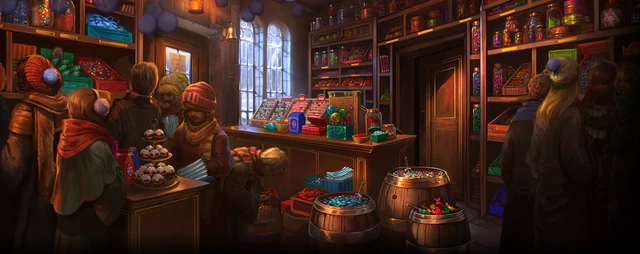
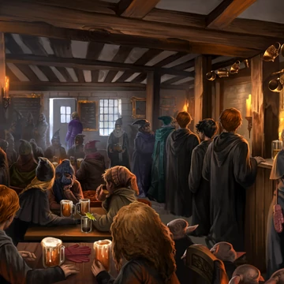

Loja dedos de mel
A loja dedos de mel é uma lendária loja de doces bruxos famosa por seus chocolates, maravilhosos e selvagens doces como os feijões que tem sabores como:Cola de envelope, cera de ouvido e catarro.

Três Vassouras, um pub que também atende a estudantes menores de idade
A bebida favorita dos estudantes é a cerveja amanteigada. Outras bebidas são Uisque de Fogo, Água de Gilly, Abóbora Espumante, Rum de Groselha.